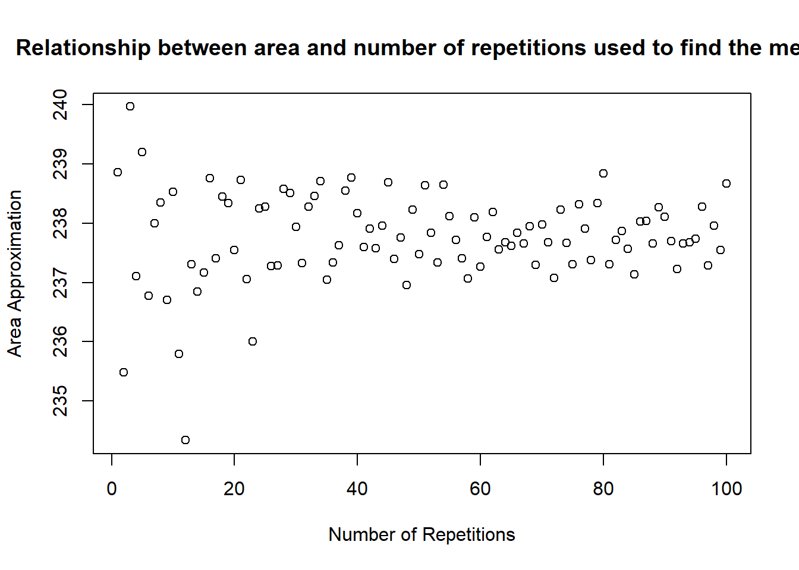
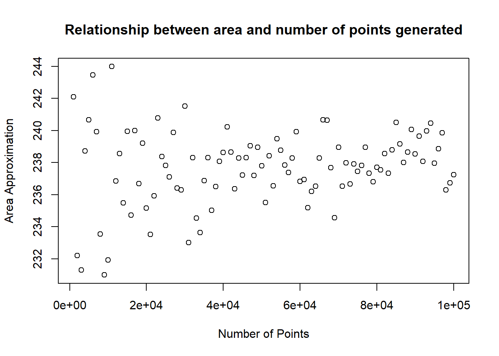

As mentioned briefly in the initial task, we believe if we increased the number of test points and the number of repetitions to find the mean for the Monte Carlo method the approximation will become closer and closer to the actual are area of the polygon. Here this will be investigated further using regular circular convex polygons and try and provide evidence to back up our hypothesis.
#Construct regular polygon with n vertices
vertex_finder <- function(vertices, radius){
x_coords <- vector(mode = "numeric", length=vertices) #creates vectors of values to replce.
y_coords <- vector(mode = "numeric", length=vertices)#creates vectors of values to replce.
angle_step <- (2 *pi)/vertices # calculates the angle to increment by each time
angle <- 0
for(i in 1:vertices){ #cycles through 1 to vertices.
x_coords[i] <- cos(angle)*radius #find x compondent of the coordinate with angle
#and radius.
y_coords[i] <- sin(angle)*radius #find y compondent of the coordinate with angle
#and radius.
angle = angle + angle_step #increase angle by angle_step
}
points.angle <- list(x_coords = x_coords, y_coords = y_coords, angle_step, radius)
return(points.angle)
}
max_vertices <- 10
plot(0, main="Regular Polygons In a Circle" ,type="n", xlab="x", ylab="y",
xlim=c(-10, 10), ylim=c(-10, 10), asp = 1) #creates a plot looking at -10 to 10
#in both x and y axis
for(i in 3:max_vertices){
polygon(vertex_finder(i, 10)[[1]],vertex_finder(i, 10)[[2]])
}When coding the function for finding the vertices of a regular circular polygon, we first thought about how we would generate the coordinates and looked in to polar coordinates. Knowing this we could easy calculate the angle step by \(2\pi/vertices\) as well as entering a real number for the radius. Knowing this we defined the function \(vertex\)_\(finder\) with the requirements of needing a natural number input for the number of vertices and a real number for the radius. This is just simple conversion to polar coordinates with \(x = cos(angle)*radius\) and \(y = sin(angle)*radius\) where the angle is incremented by the angle step.
We then went on to define the variables \(x\)_ \(coords\) and \(y\)_ \(coords\) to be vectors with the same length as the number of vertices described by the function input \(vertices\). This will allow me to cycle through later changing each indexed value of zero in the vector to the correct coordinate point. For the main chunk of the function we use a for loop to cycle through one to \(vertices\) creating the \(x\) and \(y\) coordinates based on the angle between the vertex and the horizontal. This angle is generated by starting at zero then within each iteration of the for loop the angle is increased by the angle step, as previously mentioned, until rotated \(2\pi\). Once all of the vertices have been calculated we store both \(x\)_ \(coords\) and \(y\)_ \(coords\) in a list called \(points.angle\) as well as the angle increments that achieved these coordinates. This list is then returned from the function.
As we stated before we want to to test if increasing the the number of points generated using the Monte Carlo process and if we increase the number of repetitions to find the mean give a better approximation of the area of the polygon. To do this we will use the function above to generate a pentagon to test the hypothesis.
radius <- 10
x_1 <- vertex_finder(5,radius)[[1]] #recals the function that generates the coordinates for a regular circular polygon.
y_1 <- vertex_finder(5,radius)[[2]] #y coordinates for vertices
no.points <- 10000 #number of test points to generate and determine if in or outside the polygon.
areas <- 0
repetitions <- 15
for(i in 1:repetitions){# retpeats monte carlo method 10 times and finds an average for the approximate area
monte.carlo.points.x <- runif(runif(no.points,-radius-5, radius+5)) #generates random points over polygon dimensions.
monte.carlo.points.y <- runif(runif(no.points,-radius-5, radius+5))
areas <- c(areas, point_in_out(x_1,y_1,monte.carlo.points.x,monte.carlo.points.y, "Monte2", plot = 0)) #monte carlo proccess
}
point_in_out(x_1,y_1,monte.carlo.points.x,monte.carlo.points.y, "Monte2", plot = 1) #monte carlo proccess## [1] 900Here is the Monte Carlo process we used before on a circular polygon which has been generated by the \(vertex\) _\(finder\) function. We used 15 repetitions of the process to calculate a mean approximation for the area which should be closer to the actual area than if we simply did one repetition.
radius <- 10
x_1 <- vertex_finder(5,radius)[[1]] #recals the function that generates the coordinates for a regular circular polygon.
y_1 <- vertex_finder(5, radius)[[2]]
no.points <- 10000 #number of test points to generate and determine if in or outside the polygon.
areas.rep <- 0
for(repetitions in 1:100){
areas <- 0
for(i in 1:repetitions){# retpeats monte carlo method 10 times and finds an average for the approximate area
monte.carlo.points.x <- runif(no.points,-radius-5, radius+5) #generates random points over polygon dimensions.
monte.carlo.points.y <- runif(no.points,-radius-5, radius+5)
areas <- c(areas, point_in_out(x_1,y_1,monte.carlo.points.x,monte.carlo.points.y, "Monte2", plot = 0)) #monte carlo proccess
}
#point_in_out(x_1,y_1,monte.carlo.points.x,monte.carlo.points.y, "Monte", plot = 1) #monte carlo proccess
areas.rep <- c(areas.rep,mean(areas[-1]))
}
plot(x = 1:100,areas.rep[-1], main = "Relationship between area and number of repetitions used to find the mean",xlab = "Number of Repetitions", ylab = "Area Approximation")
radius <- 10
x_1 <- vertex_finder(5,radius)[[1]] #recals the function that generates the coordinates for a regular circular polygon.
y_1 <- vertex_finder(5,radius)[[2]]
no.points <- 1000 #number of test points to generate and determine if in or outside the polygon.
areas.points <- 0
area <- 0
while( no.points <= 100000){# retpeats monte carlo method 10 times and finds an average for the approximate area
area <- 0
monte.carlo.points.x <- runif(no.points,-radius-5, radius+5) #generates random points over polygon dimensions.
monte.carlo.points.y <- runif(no.points,-radius-5, radius+5)
area <- point_in_out(x_1,y_1,monte.carlo.points.x,monte.carlo.points.y, "Monte2", plot = 0) #monte carlo proccess
areas.points <- c(areas.points,area)
no.points <- no.points + 1000
}
plot(1:(length(areas.points)-1)*1000,areas.points[-1], main = "Relationship between area and number of points generated",xlab = "Number of Points", ylab = "Area Approximation")
monte.carlo.points.x <- runif(no.points,-radius-5, radius+5) #generates random points over polygon dimensions.
monte.carlo.points.y <- runif(no.points,-radius-5, radius+5)
area <- point_in_out(x_1,y_1,monte.carlo.points.x,monte.carlo.points.y, "Monte2", plot = 0) #monte carlo proccessLooking at what happens when we increase the number of points in the Monte Carlo process we can clearly see that the approximate area does converge to the actual area of the polygon we wish to find the area of and if we set the number of points high enough, ie if the number of points is infinity then the area would be an exact approximation. Likewise, if we vary the number of repetitions used to calculate the mean area with a fixed number of points, the approximate area converges to the actual area. After a lot of testing we came to the conclusion believe a balance between the two gives a great approximation. This is because It takes in to account that for smaller values for the number of points use will generally have a high standard deviation and variance from the mean approximate area. If we increase the number of repetitions, this is slightly mitigated, and the law of large number starts to become present.
Alongside this, I decided it was interesting to see if it was possible to advance the Monte Carlo method to give a more accurate approximation for the area. I coupled this with the area of regular convex polygons as it gives me a large range or shapes to test using different methods.
grid_generator <- function(interval, x_1, y_1){#Function to generate the x and y
grid.points.x <- seq(-radius-5, radius+5, by=interval)#Define sequence for x values across the x range
grid.points.y <- seq(-radius-5, radius+5, by=interval)#Define sequence for y values across the y range
grid.points.x2 <- floor(max(x_1)+500)#Initialise an extreme value
grid.points.y2 <- floor(max(y_1)+500)#Initialise an extreme value
for(i in 1:length(grid.points.x)){#cycle through x values.
for(n in 1:length(grid.points.y)){ #cycles each y for each x.
grid.points.x2 <- c(grid.points.x2, grid.points.x[i])#contains the x aspect of the coordinates
grid.points.y2 <- c(grid.points.y2, grid.points.y[n])#contains the y aspect of the coordinates
}
}
grid.points.x2 <- grid.points.x2[grid.points.x2!= floor(max(x_1)+500)]#removes the extreme value of x.
grid.points.y2 <- grid.points.y2[grid.points.y2!= floor(max(y_1)+500)]#removes the extreme value of x.
retlist <- list(grid.points.x2, grid.points.y2,length(grid.points.x2))#list containing all the information generated from the function.
return(retlist)
}Rather than using randomly generated points in a range like the Monte Carlo method, we thought about using test points in a grid layout with the hopes of increasing the accuracy of the approximation. We created a function that generates all the test points in a grid pattern, which are then substituted in to the first function we described for testing whether points were in or out of the polygon. This function is named \(grid\) _\(generator\). This function takes in a value for the interval, which is defined before the function is run as well as the coordinates of the polygon. This is used to generate the grid over the whole polygon, with points in and out of the polygon. The function works by creating two sequences one for the \(x\) part of the coordinate and another for the \(y\). Because We am trying to generate the test points in a square grid all the points in the same column will have the same \(x\) part and vice versa for the rows. Knowing this we use two iteration loops to first cycle through the \(x\) coordinates and within this the second to for each \(x\), \(y\) is assigned to it. This is repeated for all the \(x\) values. In addition, two vectors with length that applies to the number of points specified are generated. This is then returned from the function.
radius <- 10
grid_generator2 <- function(interval, x_1, y_1){#Function to generate the x and y
grid.points.x <- seq(-radius-5, radius+5, by=interval)
grid.points.y <- seq(-radius-5, radius+5, by=interval)
grid.points.x2 <- radius+500
grid.points.y2 <- radius+500
for(i in 1:length(grid.points.x)){#cycle through x values.
for(n in 1:length(grid.points.y)){#cycle through y values.
if(n%%2){#if row is even indexed shifts x aspect by half interval, creating triangular grid.
grid.points.x2 <- c(grid.points.x2, (grid.points.x[i]+(interval/2)))#contains the x aspect of the coordinates
grid.points.y2 <- c(grid.points.y2, grid.points.y[n])#contains the x aspect of the coordinates
}
else{#if odd same as square.
grid.points.x2 <- c(grid.points.x2, grid.points.x[i])#contains the x aspect of the coordinates
grid.points.y2 <- c(grid.points.y2, grid.points.y[n])#contains the x aspect of the coordinates
}
}
}
test <- (grid.points.x2 >= (radius+5))#removes the end most shifteted points, that are now outside of the allowed range.
for(i in 1:(length(grid.points.x2))){ #this then cycles through the x and coordinates and sets to point outside area to be removed.
if(test[i] == TRUE){
grid.points.x2[i] <- radius+500
grid.points.y2[i] <- radius+500
}
}
grid.points.x2 <- grid.points.x2[grid.points.x2!= radius+500] #removes the extreme value of x.
grid.points.y2 <- grid.points.y2[grid.points.y2!= radius+500] #removes the extreme value of x.
retlist <- list(grid.points.x2, grid.points.y2, length(grid.points.x2))
return(retlist)
}Along the same lines as this, we also created another function, which generates a triangular grid of test points rather than a square. We wanted to see if there was any difference in the approximation of the area calculated and which was more accurate. This function was very similar to the previous square grid generator. However, it checks if the row indexing is even and if so all the \(x\) values of the even indexed rows are incremented by half the interval specified creating the triangular grid. This effectively shifted the even lines to the right giving us a triangular grid. We realized this pushed some values out of the range, so we had to remove them, using the same method as when we test if a point if in a polygon from earlier.
#Squared grid
#Generates a regular circular polygon with radius and number of vertices choosen by user.
radius <- 10
x_1 <- vertex_finder(5,radius)[[1]] #recals the function that generates the coordinates for a regular circular polygon.
y_1 <- vertex_finder(5,radius)[[2]]
no.points <- 1000 #specify number of points to generate
interval <- ((radius+5) - (-radius-5))/ceiling(sqrt(no.points)-1) #determines interval based on number of desired points.
point_in_out(x_1,y_1,grid_generator(interval, x_1, y_1)[[1]], grid_generator(interval, x_1, y_1)[[2]], type = "GRID_1", plot = 1)## [1] 219.7266area_calculator(x_1,y_1)## [1] 237.7641#triangular grid
#test with triangular grid
radius <- 10
x_1 <- vertex_finder(5,radius)[[1]] #recals the function that generates the coordinates for a regular circular polygon.
y_1 <- vertex_finder(5,radius)[[2]]
no.points <- 1000 #the actual number of points is -50 due to the shift to the right.
interval <- (ceiling(max(x_1)+5) - floor(min(x_1)-5))/ceiling(sqrt(no.points)-1) #determines interval based on number of desired points.
point_in_out(x_1,y_1,grid_generator2(interval, x_1, y_1)[[1]],grid_generator2(interval, x_1, y_1)[[2]], type = "GRID_2", plot = 1)## [1] 228.213area_calculator(x_1,y_1)## [1] 237.7641When comparing the data from both the square grid approximation and the triangular grid approximation, we found that both do approach the actual area of the polygon. However my hypothesis which stated that if the points are equally spread out in a grid format the approximate area calculated will be closer than the Monte Carlo method due to this even spaced properties. After rigorous of testing with increasing number of the points for both the square grid and triangular, we found that the Monte Carlo method provided the closest approximation to the actual area. This could be down to small errors in my code that we have not accounted for as we have used the same approach as the Monte Carlo for determining the approximate area.
In the above examples of the code that generates the square and triangular grids we choose to use one thousand points so that you can clearly see the pattern which is generated. Further data with points greater than this is below however it is difficult to see the pattern with the number of points greater than one thousand.
(table images)
In the above tables are my findings you can see how the approximate area changes with more points in both the square grid and the triangle grid method. We used those specific number of points to test because they are all square number so will perfectly fit in a square or triangular format.